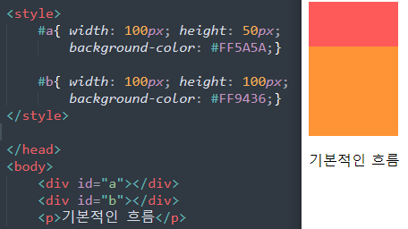
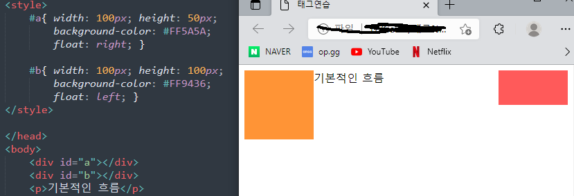
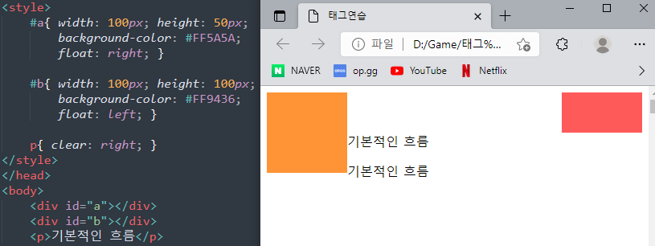

| 속성값 | 의미 |
|---|---|
| none | 기본값, 원래 상태 |
| left | 자신을 포함하고 있는 박스의 왼편에 떠 있어야 함 |
| right | 자신을 포함하고 있느 박스의 오른편에 떠 있어야 함 |
float의 기본 흐름이란?

태그의 작성 순서가 div, div가 먼저오고 p태그가 세번째로 오기때문에
브라우저에도 순서대로 렌더링 되는것을 확인 가능
float을 적용하면

이렇게 float을 준 요소들이 자리를 잡고 있는경우 다른 문서들은
float이 차지하고 있는 공간을 제외하고 나머지 공간에서 기본적인 문서의
흐름대로 렌더링이됨
| 속성값 | 의미 |
|---|---|
| none | 기본값, 아래로 이동되지 않음을 나타내는 키워드 |
| left | float이 left인 요소의 아래로 내려가겠다 |
| right | float이 right인 요소의 아래로 내려가겠다 |
| both | float이 left및 right인 요소의 아래로 내려가겠다 |
clear을 적용하면

오른쪽(right) 요소의 높이가 50px라 p태그의 시작점은
오른쪽(right) 50px보다 아래에서부터 시작되는것을 확인가능